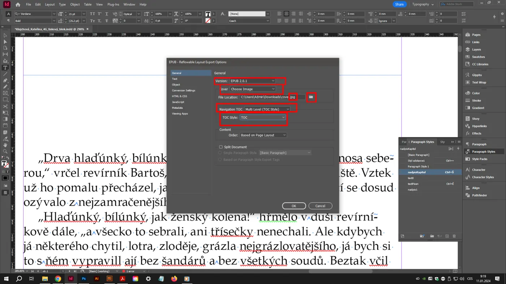
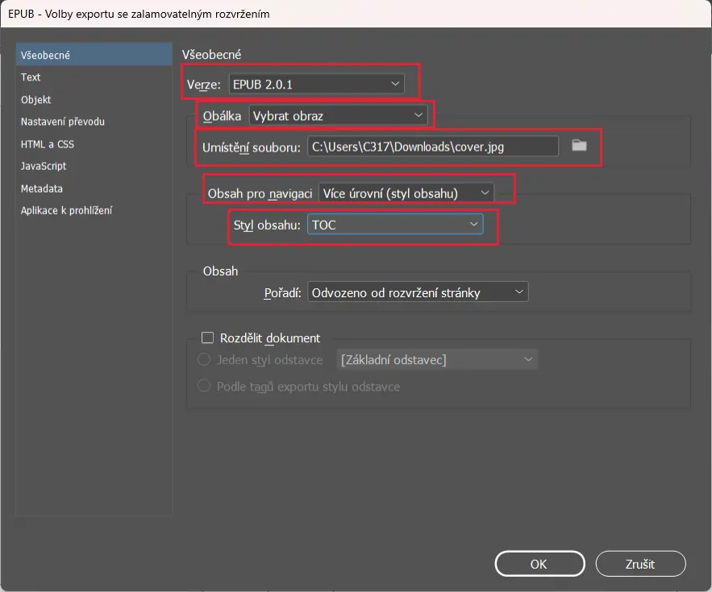

Maturitní otázka 12· InDesign a typografie
InDesign – formáty e-knih, ePub, mobi
Z připraveného textu uděláš v InDesignu e-knihu ve formátu ePub s klikacím obsahem (TOC) – po kliknutí na název kapitoly se čtenář dostane na kapitolu. Obálku navrhneš v samostatném InDesign dokumentu a vyexportuješ jako bitmapu (JPEG/PNG), kterou k ePubu připojíš. V teorii: jak jsi soubor připravil, styly a styl obsahu, obálka, a výhody a nevýhody ePub, mobi a PDF.
- InDesignexport ePub (reflowable)
- Podkladytextový soubor
- Obálkabitmapa z InDesignu, 2560 × 1600 px
- TeorieePub × mobi × PDF
Praktická část Co se obvykle chce
- Z připraveného textu vytvořit v InDesignu elektronickou publikaci a vyexportovat do ePub.
- Pečlivě provázaná textová pole a nastavený styl obsahu, aby ePub měl hypertextový TOC – kliknutím na kapitolu v obsahu skočíš na kapitolu.
- Bitmapová obálka navržená v samostatném InDesign souboru a připojená k ePubu.
Teoretická část Co musíš umět vysvětlit
- Příprava souboru pro export, nastavení odstavcových stylů a stylu obsahu.
- Návrh a implementace bitmapové obálky.
- Výhody a nevýhody ePub, mobi a PDF včetně základních charakteristik.
ePub, mobi a PDF
Tři formáty, tři filozofie: text, který se přelévá podle obrazovky (ePub, mobi), nebo pevná stránka (PDF).
| ePub | mobi / AZW / KF8 | ||
|---|---|---|---|
| Co to je | Otevřený standard (IDPF/W3C), ZIP archiv s XHTML, CSS, obrázky a metadaty (OPF, NCX/nav). Verze ePub 2 a ePub 3 (audio, video, skripty, pevné rozvržení). | Proprietární formát Amazonu pro Kindle (mobi, novější AZW3/KF8, dnes KFX). Vzniká konverzí z ePub (Calibre, Kindle Previewer). Od 2022 Amazon přijímá přímo ePub. | Portable Document Format (Adobe, ISO 32000). Pevné stránky s písmy, vektory a bitmapami; vypadá všude stejně. |
| Rozvržení | Reflowable (přelévatelné) – text se přizpůsobí velikosti obrazovky a písma; nebo fixed layout pro obrazové knihy. | Reflowable; omezené CSS. | Pevné – stránka se jen zmenšuje/zvětšuje; na mobilu nutné zoomovat. |
| Výhody | Čtenář mění písmo, velikost, pozadí; malý soubor; hypertextový obsah; funguje na všech čtečkách kromě starých Kindle; přístupnost (čtečky obrazovky). | Nativní pro Kindle (největší trh); DRM a prodej přes Amazon. | Přesná typografie a layout; obrázky, tabulky, poznámky na místě; tisk; interaktivní prvky, formuláře; jeden soubor pro obrazovku i tisk. |
| Nevýhody | Grafik nemá kontrolu nad vzhledem; složité tabulky, obtékání a sazba se rozpadají; různé čtečky zobrazují různě. | Uzavřený, svázaný s Amazonem; horší typografie; nutná konverze. | Na malém displeji nečitelné bez zoomu; velký soubor; nelze měnit písmo; nevhodné pro dlouhé čtení na telefonu. |
| Kdy použít | Beletrie, texty, učebnice – vše, co se čte na různých zařízeních. | Distribuce přes Amazon Kindle. | Obrazové publikace, katalogy, manuály, tisk, archivace (PDF/A), interaktivní dokumenty (iPDF). |
| Z InDesignu | Soubor › Exportovat › EPUB (přelévatelné rozvržení) nebo EPUB (pevné rozvržení). | Export ePub → konverze v Calibre (ve sdílené složce) nebo Kindle Previewer. | Soubor › Exportovat › Adobe PDF (tisk) / (interaktivní). |
Jedna věta pro komisi„ePub je přelévatelný otevřený formát pro čtečky, mobi je totéž v uzavřené podobě pro Kindle, PDF je pevná stránka pro tisk a obrazové knihy.“
Příprava dokumentu pro export
ePub nebere stránky, ale tok textu: pořadí rámečků, odstavcové styly (→ CSS třídy) a ukotvené objekty. Co není ve story nebo není ukotvené, vypadne nebo skončí na konci.
Jedna story
Celý text knihy v jedné provázané story (automatické nalití). Více samostatných story = ePub je seřadí podle pozice nebo podle panelu Články – nespolehlivé. Obálka a tiráž mohou být vlastní rámečky, ale pořadí urči v panelu .
Styly = CSS
Každý odstavcový styl se stane třídou CSS. Pojmenuj je bez diakritiky a mezer (Kapitola, Text, Motto). Ve stylu v záložce Export – značkování přiřaď HTML tag: Kapitola → h1, Podkapitola → h2, Text → p. U Kapitoly zaškrtni Rozdělit dokument EPUB – každá kapitola bude samostatný XHTML soubor (rychlejší načítání, správné skoky).
Žádné lokální formátování
Lokální přepsání (naklikané tučné) se exportuje jako inline span se stylem – rozbíjí to CSS a čtečky ho ignorují. Tučné a kurzíva přes znakové styly (Export: strong, em). Odstavce odděluj mezerou za (styl), ne prázdnými řádky – prázdné odstavce v ePubu dělají díry.
Obrázky ukotvené
Obrázek musí být ukotvený v textu (přetáhni modrý čtvereček rámečku do textu, nebo Objekt › Ukotvený objekt › Vložit). Volný obrázek skončí na konci knihy. Ve Volby exportu objektu nastav alternativní text a velikost relativně k šířce textu (např. 100 %).
Co ePub neumí
Obtékání kolem tvaru, sloupce, vícesloupcové tabulky se slučováním, tabulátory a vodicí znaky, pevné zalomení řádků, různá písma (jen pokud vložíš fonty a čtečka je povolí), přesné umístění. Pro tyto věci je PDF.
Metadata
: název, autor, popis, klíčová slova, copyright – ePub je přebírá (titul, tvůrce, jazyk cs). Název souboru bez diakritiky.
Styl obsahu a hypertextový TOC
V ePubu existují dva obsahy: navigační TOC (menu čtečky – vzniká ze stylu obsahu) a případně obsah vysázený v textu knihy (generovaný InDesignem jako text). Pro hypertextovou navigaci je klíčový ten první.
- › Nový: název stylu obsahu např. TOC-ePub. Do seznamu Zahrnout odstavcové styly přidej Kapitola (úroveň 1) a případně Podkapitola (úroveň 2). Styl záznamu nevadí – do navigace jde jen text a cíl.
- Při exportu ePub v záložce Navigace zvol Navigační obsah: Více úrovní (styl obsahu) a vyber TOC-ePub. Čtečka tak zobrazí klikací obsah ve svém menu.
- Chceš-li obsah i v textu (na začátku knihy jako stránku „Obsah“): se stejným stylem obsahu, umísti na začátek story; InDesign při exportu z něj udělá hypertextové odkazy (zaškrtni Vytvořit záložky PDF – pro ePub se převedou na odkazy). Vodicí znaky a čísla stránek v ePubu nemají smysl – v nastavení obsahu zvol Číslo stránky: Bez čísla stránky pro verzi do ePubu.
- Každá kapitola začíná odstavcem se stylem Kapitola → s volbou Rozdělit dokument EPUB vznikne vlastní soubor a TOC na něj odkazuje.
Jak to vypadá uvnitř ePubu
ePub je ZIP: mimetype, META-INF/container.xml, OEBPS/content.opf (metadata, seznam souborů, pořadí čtení – spine), toc.ncx / nav.xhtml (navigace), *.xhtml (kapitoly), *.css, image/, font/. Přejmenuj .epub na .zip a podívej se dovnitř – komise to ocení.
Kontrola
- Otevři ePub v čtečce: Adobe Digital Editions, Calibre, Thorium Reader, Books (macOS), Google Play Books. V Edge/Chrome s doplňkem.
- Zkontroluj: obálka, TOC v menu klikací, kapitoly na nové „stránce“, obrázky na místě, tučné/kurzíva, žádné díry.
- Validace: EPUBCheck (Calibre ho umí spustit).
- Převod do mobi/AZW3: Calibre › Převést knihy › výstup MOBI/AZW3, obálka se přenese.
Bitmapová obálka
Obálka e-knihy je obrázek (JPEG/PNG), ne stránka. Navrhneš ji v InDesignu jako samostatný dokument a vyexportuješ jako bitmapu – ePub ji použije jako obálku v knihovně čtečky.
Rozměr
Doporučení (Amazon KDP i Apple): poměr 1,6 : 1 (výška : šířka), ideálně 2560 × 1600 px, minimálně 1000 × 625 px, max. 10 000 px. Výška alespoň 2500 px pro HD displeje. V InDesignu dokument např. 100 × 160 mm (nebo 1600 × 2560 px v režimu Web) – poměr sedí.
Návrh
Název knihy velkým, čitelným písmem (v náhledu knihovny je obálka 1–2 cm vysoká!), jméno autora, dominantní obrázek nebo barevná plocha. Žádné jemné detaily a drobný text. Barvy v RGB – obrazovka. Bez spadávky a ořezových značek.
Export bitmapy
(nebo PNG): kvalita Maximální, rozlišení tak, aby vyšlo ≈2560 px na výšku (pro 160 mm = 406 ppi; pro px dokument 72 ppi), barevný prostor RGB, bez spadávky. Alternativa: .
Implementace do ePubu
Při exportu ePub v záložce Všeobecné › Obálka: Zvolit obrázek → vyber vyexportovaný JPEG. (Volba Rastrovat první stránku udělá obálku z první stránky dokumentu – horší kvalita, ale nouzově funguje.) InDesign obrázek vloží jako cover.jpg a označí ho v metadatech.
Export ePub (přelévatelné rozvržení)
. Projdi záložky zleva doprava.
- Všeobecné: verze EPUB 3.0; Obálka: Zvolit obrázek; Navigační obsah: Více úrovní (styl obsahu) → TOC-ePub; Pořadí obsahu: Podle rozvržení stránek (jedna story) nebo Stejné jako v panelu Články; Rozdělit dokument: podle odstavcového stylu Kapitola.
- Text: poznámky pod čarou na konci kapitoly / vyskakovací; odstranit vynucená zalomení řádků ✓; odrážky a číslování mapovat na seznamy.
- Objekt: zachovat vzhled z rozvržení; rozlišení 150 ppi; velikost relativně ke stránce.
- Převod obrázků: automaticky (JPEG pro fotky, PNG pro grafiku), kvalita vysoká.
- CSS: generovat CSS ✓, zachovat lokální přepsání ✗ (pokud máš čistý dokument), vložit písma ✓ (pokud licence dovoluje).
- JavaScript: nic. Metadata: název, tvůrce, jazyk cs, vydavatel, datum.
- Aplikace prohlížení: otevřít po exportu v Digital Editions / Calibre.


Postup pro 30 minut
- 0–3minDokument knihy
A5, protilehlé, okraje 18 mm (pro ePub nehrají roli, ale dokument musí být čistý). Uložit.
- 3–6minNalití textu
Ctrl+D + Shift+klik → jedna story přes všechny stránky. Skryté znaky: smazat prázdné odstavce (^p^p → ^p).
- 6–12minStyly
Kapitola (h1, nová stránka, Rozdělit dokument EPUB), Podkapitola (h2), Text (p, zarážka, mezera za 0 nebo malá), Motto; znakové Tučné (strong), Kurzíva (em). Aplikovat na všechny nadpisy.
- 12–15minStyl obsahu
Formát › Styly obsahu › Nový TOC-ePub: Kapitola úroveň 1. Volitelně Formát › Obsah na začátek story bez čísel stránek.
- 15–21minObálka
Nový dokument 100 × 160 mm (RGB, Web/Mobilní): název, autor, plocha/obrázek. Export JPEG, maximální kvalita, 406 ppi (≈2560 px výška), RGB. Uložit INDD obálky.
- 21–26minExport ePub
EPUB (přelévatelné): obálka ze souboru, navigační obsah TOC-ePub, rozdělit podle Kapitola, odstranit vynucená zalomení, CSS generovat, metadata (název, autor, cs).
- 26–30minKontrola
Otevřít v čtečce: obálka, TOC klikací, kapitoly. Případně Calibre → MOBI/AZW3. Připravit výklad.
Pokud nefunguje TOC
- Kapitoly nemají styl Kapitola (zkontroluj panel stylů bez „+“).
- V exportu je Navigační obsah „Žádný“ nebo „Názvy souborů“.
- Styl obsahu neobsahuje styl Kapitola.
- Text je ve více nespojených story – čtečka skáče jinam.
Pokud chybí obálka
- Soubor JPEG je CMYK – musí být RGB.
- Obrázek větší než 10 000 px nebo menší než 1000 × 625.
- V exportu zvoleno „Žádná“ místo „Zvolit obrázek“.
Časté chyby
Na co se komise ptá
Jaký je rozdíl mezi ePub, mobi a PDF?
ePub – otevřený přelévatelný formát (XHTML + CSS v ZIPu), text se přizpůsobuje obrazovce, čtenář mění písmo; mobi/AZW – uzavřený formát Amazonu pro Kindle, vzniká konverzí z ePub; PDF – pevné stránky s přesnou typografií, pro tisk a obrazové knihy, na malém displeji nutný zoom.Jak jsi připravil dokument pro export do ePub?
Jedna provázaná story bez prázdných odstavců a vynucených zalomení; odstavcové styly s HTML značkami (Kapitola → h1 s rozdělením dokumentu, Text → p), znakové styly pro tučné a kurzívu; obrázky ukotvené v textu; metadata v Informacích o souboru.Jak vznikne hypertextový obsah (TOC)?
Vytvořím styl obsahu (Formát › Styly obsahu) se stylem Kapitola; při exportu ePub zvolím Navigační obsah: Více úrovní (styl obsahu). Čtečka zobrazí klikací obsah. Volitelně i obsah v textu přes Formát › Obsah – InDesign z něj udělá odkazy.Jak jsi navrhl a připojil obálku?
Samostatný dokument InDesignu v poměru 1,6 : 1 (100 × 160 mm), velký název a autor, RGB. Export JPEG v maximální kvalitě tak, aby měl ≈2560 × 1600 px. V exportu ePub: Obálka › Zvolit obrázek. Minimální rozměr obálky je 1000 × 625 px.Proč se v ePubu nepoužívají čísla stránek a vodicí znaky?
Text se přelévá podle zařízení a velikosti písma – stránky neexistují, mění se s každým nastavením. Navigace je odkazová (TOC), ne číselná. Tabulátory a vodicí znaky CSS v čtečkách nepodporují.Jak z ePubu uděláš mobi?
Konverzí v Calibre (Převést knihy › MOBI nebo AZW3) nebo v Kindle Previewer. Amazon dnes přijímá i ePub přímo. Obálka a TOC se při konverzi zachovají.